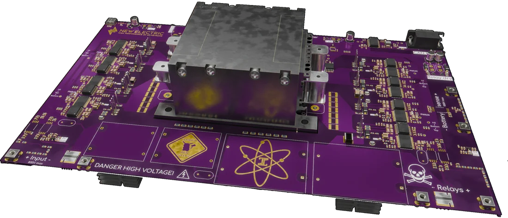
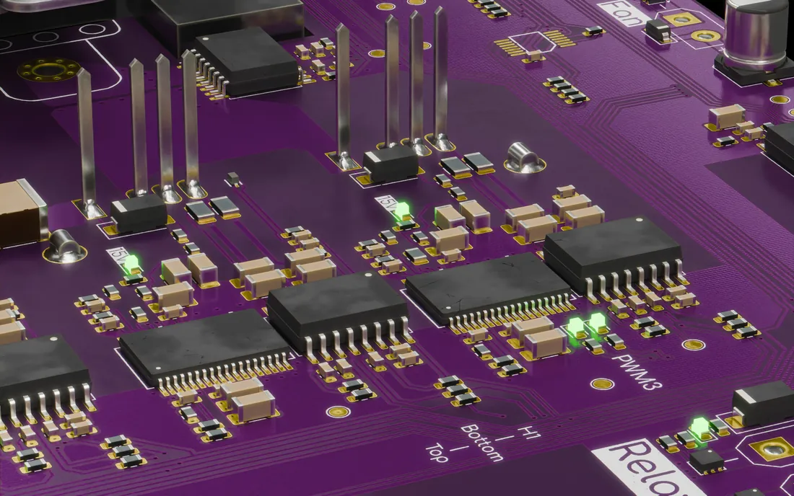
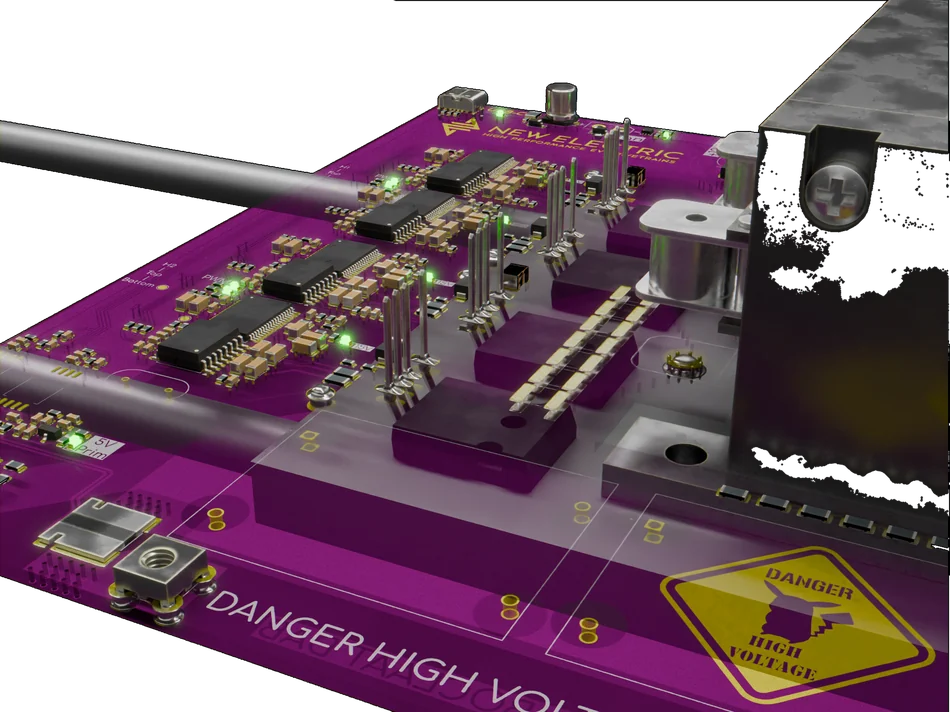

Work 01 DC-DC
Ten kilowatts,
on the bench.
A 10 kW dual active bridge module developed as part of a thesis on a 500 kW off-grid EV charger: 800 V in, up to 1000 V out at 100 kHz, with the isolation and cooling requirements considered from the start.

01The brief
This module was developed during an internship thesis on whether a 500 kW off-grid EV DC fast charger could be built in-house. The system would be made from modules sharing a DC bus, so the thesis needed a repeatable 10 kW building block. This board is based on a Texas Instruments DAB reference design, adapted to the available components and manufacturing process.
It was designed for 500–800 V on the primary and 250–1000 V on the secondary, with cost and manufacturability part of the brief from the beginning. The thesis contains the design rationale, LTspice and PLECS simulations and test results; the repository contains the hardware.
02What a 10 kW module needs
| Topology | Dual active bridge, phase-shift controlled |
|---|---|
| Input | 500–800 V DC |
| Output | 250–1000 V DC (peak efficiency at 666 V) |
| Power | ≈ 10 kW per module |
| Current | 15 A primary (22 A peak) · 17 A secondary (25 A peak) |
| Switching | 100 kHz |
| Isolation | 10 kV primary-to-secondary |
| Transformer | Payton Planar, 24:20, 35 µH leakage |
| Secondary switches | Microchip MSC035SMA170B4, 1700 V SiC |
| Creepage / clearance | 3 mm primary · 3.5 mm secondary (IEC-60664 at 1000 V) |
| Voltage derating | 1.7× on HV secondary parts |
| PCB | 6 layers · 70 µm Cu · 2 mm FR4 |
| Cooling | Fin-stack air or aluminium liquid-cooling plate |
| Connectors | XT30 for HV in/out — contactors off-board |
03Key design decisions
Six layers instead of four. The extra copper helps carry the 22 A primary and 25 A secondary peaks, spreads heat, and leaves room for via stitching around the high-current path. KiCad's trace-width calculator was used to keep the estimated trace rise within 10 °C above ambient at 30 A.
1700 V on the isolated side. The 1000 V output also has to accommodate switching overshoot and transformer ringing. The secondary SiC MOSFETs and DC-blocking capacitors are rated at 1700 V, giving 1.7× derating. Two 2280-package capacitors are stacked to reach the required capacitance within the available footprint.
External contactors. High-voltage switching is handled by external contactors through XT30 connectors. That keeps the contactor voltage rating independent of the prototype board and makes it easier to change the system architecture later.
The transformer is part of the structure. It sits in the centre of the board and also supports the PCB and cooling plate. Using the heaviest component as part of the mechanical structure saves a separate frame.
04What went wrong
05Numbers
| Module power | ≈ 10 kW |
|---|---|
| Switching frequency | 100 kHz |
| Isolation | 10 kV |
| Creepage at 1000 V | 3.5 mm |
| HV derating | 1.7× |
| Copper | 6 layers · 70 µm |
06The rest of the board
All components sit on the top side, for cheaper single-sided assembly and a simpler stencil. Isolation is galvanic through a Payton Planar transformer — 24:20 turns, 35 µH of leakage inductance, 10 kV dielectric strength — and the 5 V and gate-drive rails are derived on-board on both sides of the barrier. Control is a TI controlCARD over CAN, phase-shift regulating the bridge.
The prototype was manufactured by JLCPCB on a six-layer, double-thick-copper process. It is a proof of concept rather than a finished product, but it provides a concrete basis for the thesis evaluation.

